GraspGraphNet: Graph-Structured Multi-Embodiment Dexterous Grasp Generation
Abstract
Dexterous grasp generation across robot hands is challenging because hands differ in kinematic topology, actuation dimensions, and native command spaces. We introduce GraspGraphNet, a topology-aware grasp generation framework that represents each hand as a URDF-derived kinematic graph and directly generates executable palm poses and joint configurations. GraspGraphNet combines hierarchical object surface encoding, differentiable forward kinematics, and dynamic world-edge message passing to model evolving robot-object interactions. It applies conditional flow matching directly in executable palm-pose and joint-state space, avoiding post-processing optimization, inverse kinematics, and retargeting. Using a shared model trained on Barrett Hand, Allegro Hand, and Shadow Hand, GraspGraphNet achieves an average success rate of 83.48% with 0.040 s inference time per grasp on a 40-object benchmark. Without retraining, the same model achieves 72.70% success on controlled finger-removal variants, demonstrating robustness to hand-topology variations.
Method Overview
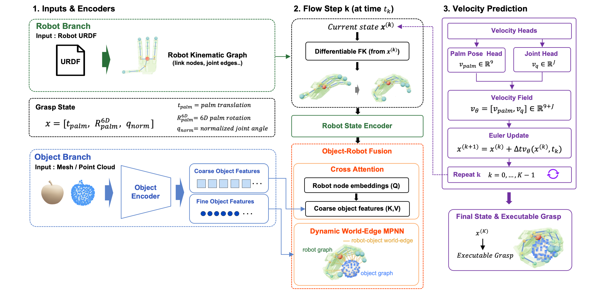
Robot Hand Graphs
Robot hands are represented as URDF-derived link-joint graphs, allowing one model to process different kinematic structures.
Dynamic World Edges
Robot-object interaction edges are recomputed as the hand moves, exposing the model to evolving local contact geometry.
Executable Generation
Conditional flow matching directly predicts palm poses and actuated joint states without test-time retargeting or IK.
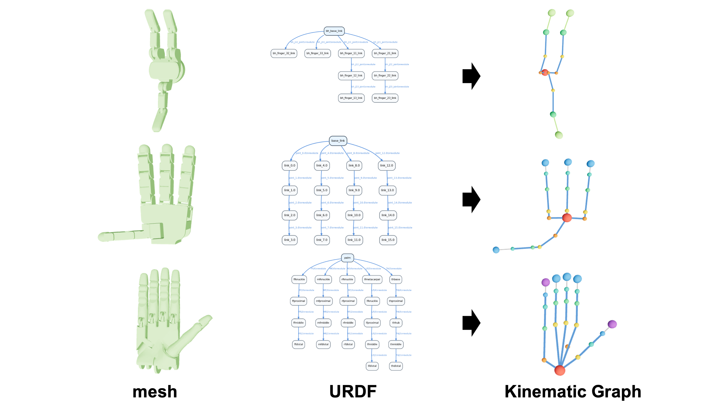
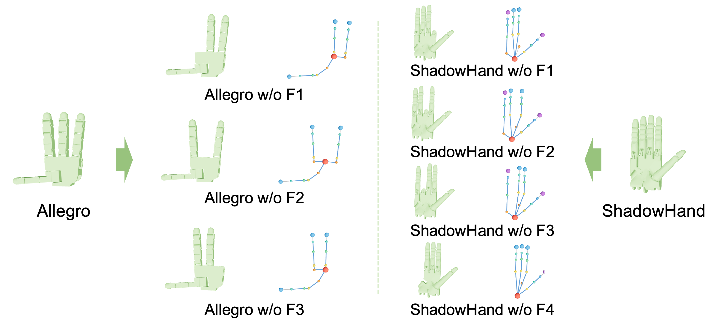
World-Edge Visualizations
Generated grasps for three robot hand embodiments.
Barrett Hand
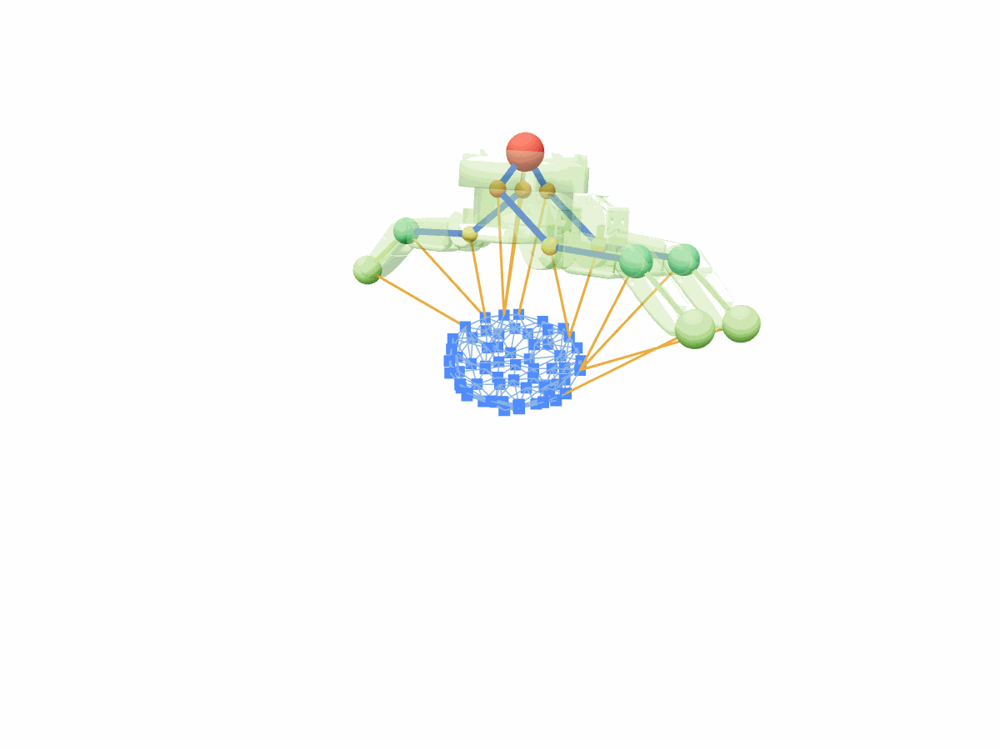
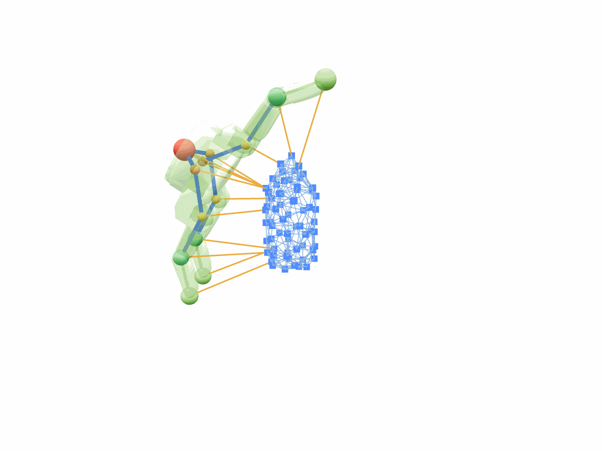
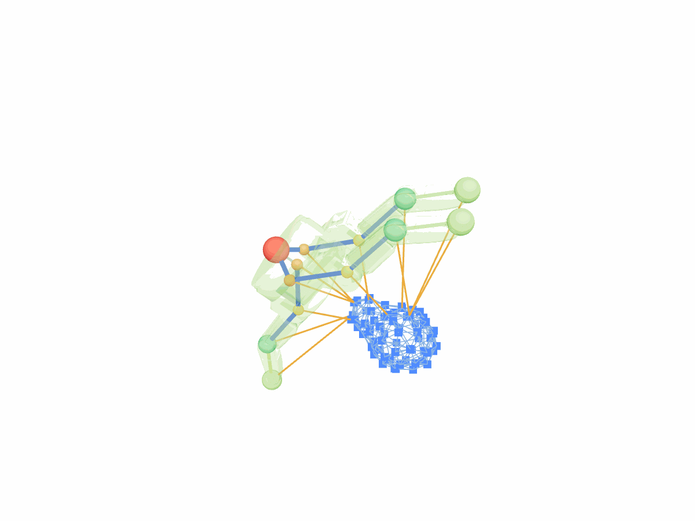
Allegro Hand
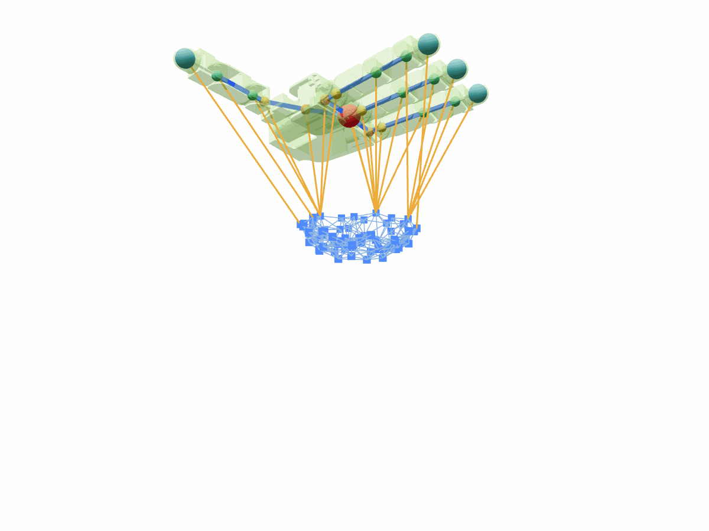
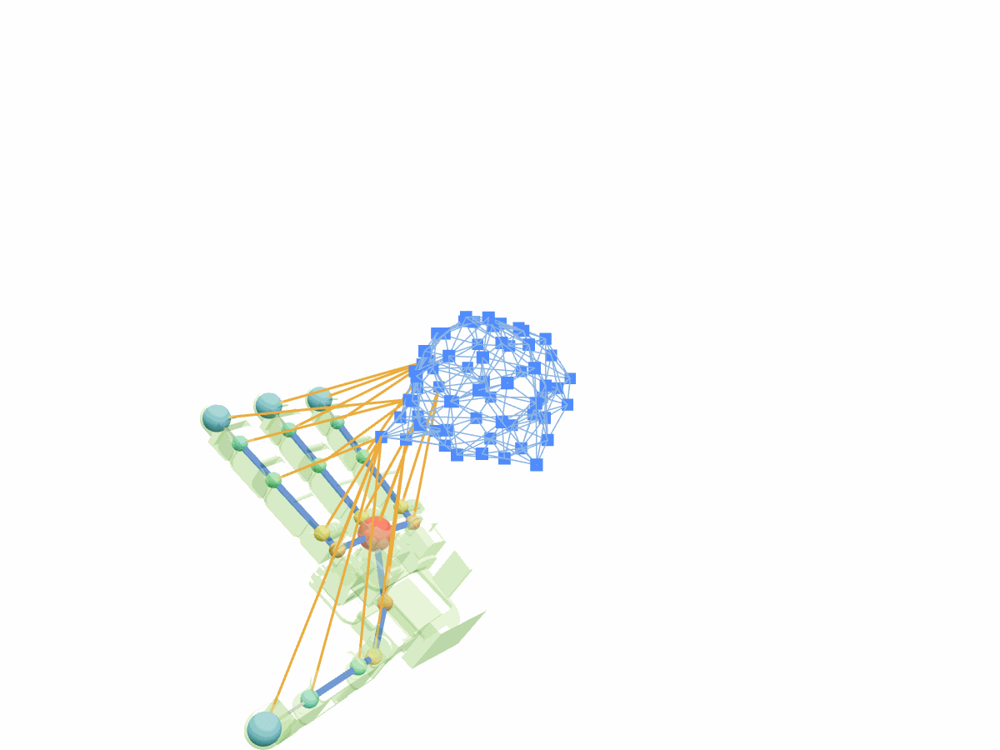
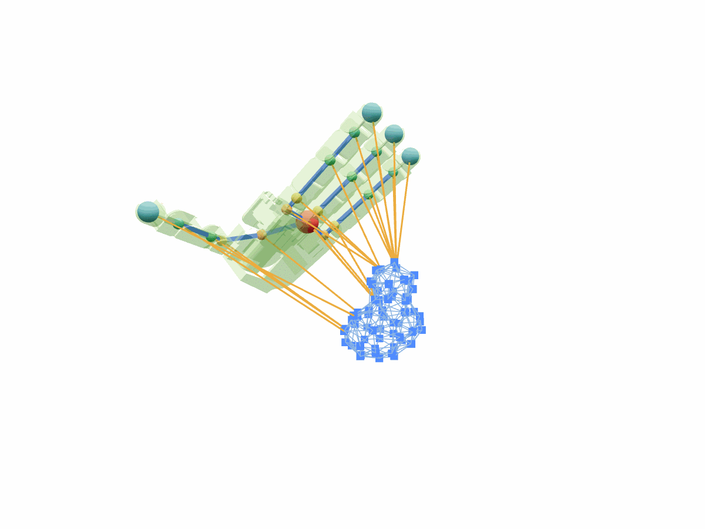
Shadow Hand
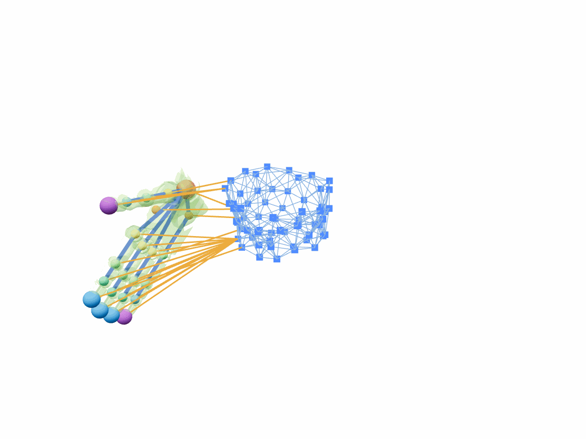
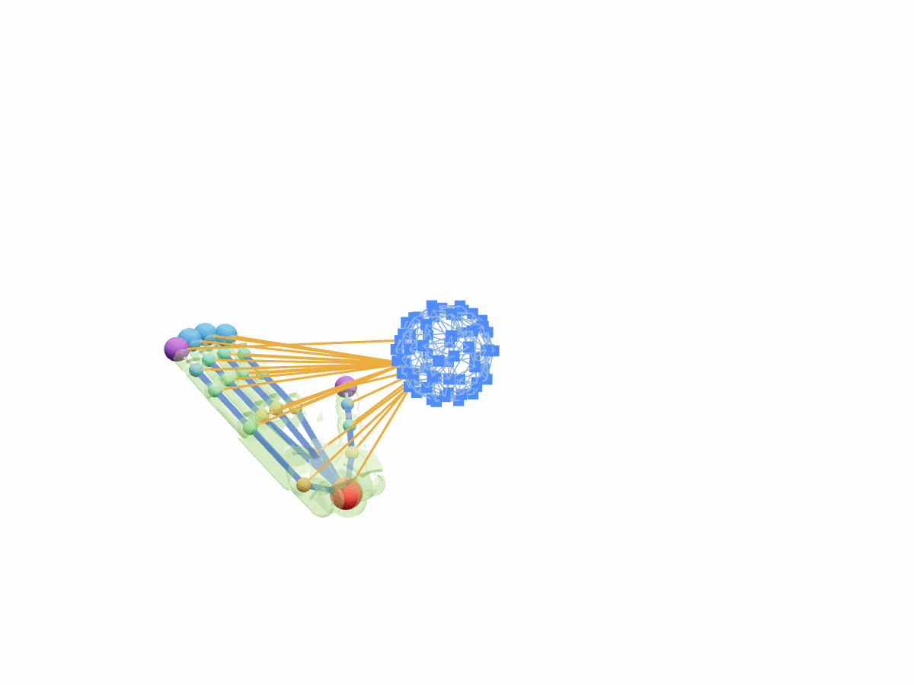
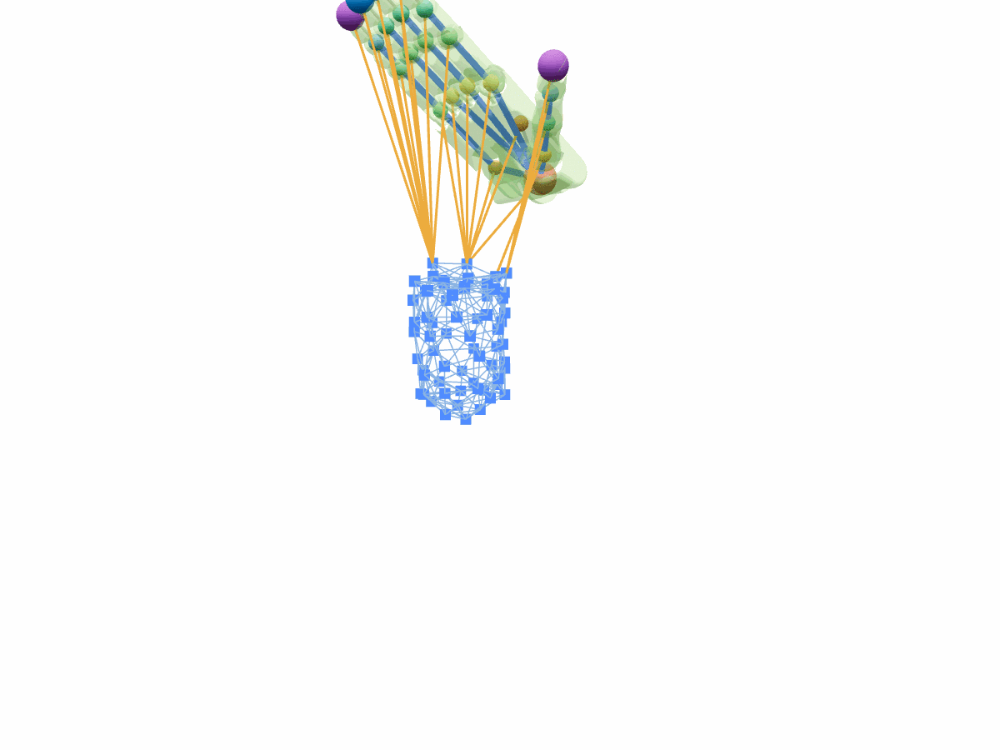
Real-Robot Experiments

BibTeX